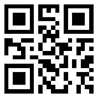
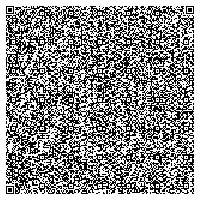

Nosotros:
Pet-CLoud y Vet-CLoud son productos creados por Molokotech, brindando soluciones tecnológicas a problemáticas relacionadas con las mascotas, a su vez nos especializamos en la creación de códigos QR con los lenguajes de programación más sólidos del mercadoAcademia QR:

Acá vamos a responder algunas preguntas técnicas sobre los códigos
QR en general y los nuestros en particular
- Es un módulo para almacenar información en una matriz de puntos.
- La densidad de bytes (cantidad de puntos negros) es importante a la hora de la lectura y la distancia en que se va a leer.
- Nuestros códigos QR almacenan una ruta a una cloud donde están los datos de la mascota. Por ende la cantidad de datos ingresada es irrelevante ya que el QR siempre será el mismo.
- Los colores, tanto de los puntos negros como el fondo del QR afectan su lectura. Por ende intentar colocar colores suaves y un fondo muy oscuro dificultará su lectura.
- Los dibujos superpuestos de gran tamaño afectan la lectura del mismo, hay tolerancias como los logos centrales de menor tamaño.
- El tamaño óptimo de impresión es de 3x3 cm en adelante, menos que ése tamaño dificulta su lectura, no solo para el dispositivo, sino para aquel que tiene que acercarse todavía más para leerlo.
Otros sistemas:

Lo que nos
diferencia de otros servicios web que crean códigos QR incluso
gratuitos, es que el límite para insercción de datos es limitado a
la cantidad de bits que pueda almacenar el código, haciendo que el
código solo pueda almacenar datos básicos o en poca cantidad.
Porqué?, porque si uno quiere cargar toda una historia clínica o
mucha información dentro de un QR el mismo empieza a ser más tupido
con respecto a los bits o puntos negros que lo caracterizan,
obligando a que el mismo crezca en tamaño para que sea legible por
los lectores actuales e inclusive así sería muy difícil de ser
leído, y limitando la portabilidad del mismo. Otra cosa a tener en
cuenta con estos códigos es que una vez creados no pueden ser
modificados sus datos, a menos que se cree de nuevo.